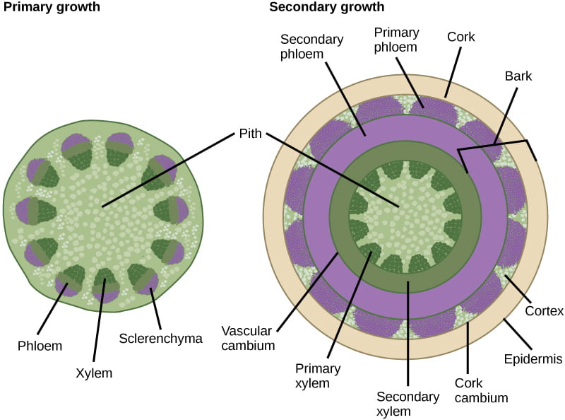
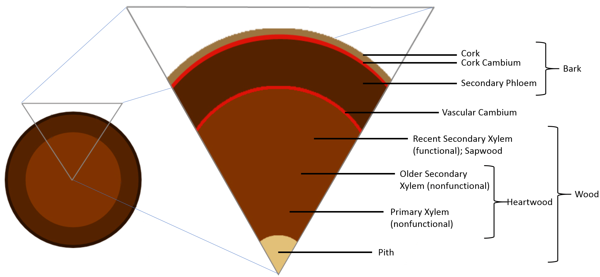

目录
茎的功能、芽的类型、生长方式与变态
茎的主要功能包括以下五个方面:
- 支持:支持叶、花、果实,使其合理展布在空间中,利于接受阳光和传粉
- 输导:将根吸收的水分和无机盐向上运输到叶(木质部),将叶光合产物向下及横向运输(韧皮部)
- 贮藏:茎的薄壁组织(皮层、髓)可贮藏营养物质,变态茎(块茎、鳞茎等)贮藏功能更突出
- 繁殖:许多植物可利用茎(地下茎、匍匐茎、扦插枝条)进行营养繁殖
- 光合:绿色幼茎含叶绿体,可进行光合作用(如仙人掌、幼嫩枝条)
芽(bud)的类型:芽是处于幼态而未伸展的枝、花或花序的原始体。按不同标准可分为三类:
① 按位置分:
- 顶芽(terminal bud):生于主干或枝条顶端的芽
- 侧芽 / 腋芽(lateral bud / axillary bud):生于叶腋(叶柄与茎之间)的芽,由腋芽原基发育而来
- 不定芽(adventitious bud):不从顶端或叶腋发生,可从根、叶、茎的任何部位(受伤部位)产生
② 按性质分:
- 叶芽(leaf bud):发育为营养枝(枝叶)
- 花芽(flower bud):发育为花或花序
- 混合芽(mixed bud):同时发育为枝叶和花(如苹果、梨)
③ 按有无鳞片分:
- 鳞芽(scaly bud):外面有芽鳞(变态叶)包被,保护越冬,温带植物多见
- 裸芽(naked bud):外面无芽鳞包被,裸露,热带植物及某些温带植物(如枫杨)多见
茎的生长方式依茎在地面的姿态可分为四类:
- 直立茎(erect stem):茎背地性直立生长,最常见(如杨树、玉米)
- 缠绕茎(twining stem):茎本身缠绕他物向上生长(如牵牛、菜豆、何首乌)
- 攀缘茎(climbing stem):茎以卷须、气生根、吸盘等特殊器官攀附他物上升(如葡萄、豌豆、爬山虎)
- 匍匐茎(creeping stem):茎平卧地面、节上生不定根(如草莓、甘薯)
茎的变态(modified stem):为适应特殊功能,茎(含地下茎)的形态结构发生改变。主要类型:
- 地下变态茎(生长在地下,易与根混淆):
- 根状茎(rhizome):匍匐地下,有节和节间,节上有退化的鳞片叶和腋芽。代表:竹、莲(藕)、姜、白茅
- 块茎(tuber):由地下茎顶端膨大而成,表面有芽眼(顶芽+腋芽)。代表:马铃薯、芋头
- 鳞茎(bulb):由肉质鳞片叶(变态叶)包裹顶芽而成,基部为鳞茎盘(茎)。代表:洋葱、百合、大蒜、水仙
- 球茎(corm):由地下茎基部膨大而成,实心,有节和膜质鳞片叶。代表:荸荠、慈姑、唐菖蒲
- 地上变态茎:
- 肉质茎(fleshy stem):茎肥厚多汁,含叶绿体行光合,叶退化成刺。代表:仙人掌
- 茎卷须(stem tendril):由枝变态成卷须,攀缘。代表:葡萄、南瓜
- 茎刺(stem thorn):由枝(腋芽)变态成刺,生于叶腋,具维管组织。代表:山楂、皂角、柑橘
- 叶状枝(cladode / phylloclade):茎扁化成叶状行光合,叶退化。代表:竹节蓼、假叶树
分蘖(tillering):是禾本科植物(小麦、水稻等)特有的分枝方式。幼苗期,茎基部若干节(分蘖节)上的腋芽在土壤表层以下发育为新枝(分蘖),每个分蘖基部又可产生不定根,形成相对独立的分枝系统。
- 发生部位:分蘖节(茎基部接近地面、节间极短的几个节)
- 分蘖可产生一级、二级……多次分蘖,决定植株的分蘖数和穗数
- 分蘖节是禾本科植物的营养繁殖和抗逆(越冬)的重要部位
茎尖分生组织(SAM)与原套-原体学说
茎尖(shoot tip)是指茎的顶端分生区及其衍生的区域,是茎生长、叶和腋芽发生的部位。与根尖不同,茎尖没有根冠(因在空气中生长,无需保护)。茎尖从顶端向基部分为分生区、伸长区、成熟区三部分(部分教材将顶端分生组织后方的叶原基发生区单列)。
2.1 茎尖分生组织(SAM)的组织分区——原套-原体学说
原套-原体学说(Tunica-Corpus theory)由 Schmidt(1924)提出,描述被子植物茎尖顶端分生组织的细胞层状结构,将 SAM 分为两个部分:
① 原套(Tunica):
- 位于 SAM 最外方,通常为1–2 层细胞(多数被子植物 2 层,裸子植物分层不明显)
- 细胞排列整齐,只进行垂周分裂(anticlinal division),即分裂面与表面垂直,使表面面积扩大
- 功能:负责茎尖的表面生长,将来分化为表皮
② 原体(Corpus):
- 位于原套内方,是排列不规则的细胞团
- 细胞进行各方向(垂周、平周、横切)分裂,使体积增大
- 功能:负责茎尖的体积增大,将来分化为皮层、维管柱、髓等内部组织
2.2 叶原基和腋芽原基的发生
茎尖顶端分生组织下方,在特定位置由表面细胞(原套及原体外层)分裂形成突起,逐步发育为侧生器官:
- 叶原基(leaf primordium):由 SAM 周缘区的细胞平周分裂突出形成,将来发育为叶。叶原基的发生位置和排列决定叶序(互生/对生/轮生)
- 腋芽原基(axillary bud primordium):发生于叶原基的腋部(叶柄与茎之间),由该处细胞恢复分裂形成,将来发育为腋芽(侧枝)
叶原基和腋芽原基均为外起源(exogenous origin)——由茎尖表面细胞发生,突出于表面。这与侧根的内起源(中柱鞘)形成鲜明对比。
2.3 初生分生组织及其衍生结构
茎尖顶端分生组织(SAM)分裂产生的细胞,向下逐渐分化为初生分生组织(primary meristem),再进一步分化为初生结构。初生分生组织与成熟组织对应关系:
- 原表皮(protoderm)→ 分化为表皮(epidermis)(由原套最外层分化而来)
- 基本分生组织(ground meristem)→ 分化为皮层(cortex)和髓(pith)
- 原形成层(procambium)→ 分化为初生木质部、初生韧皮部,并保留部分细胞为束中形成层(fascicular cambium)
原形成层在维管束内并未全部分化,保留分裂能力的部分即束中形成层,这是茎进行次生生长的基础(单子叶植物原形成层全部分化,无束中形成层)。
从外到内:表皮 → 皮层 → 维管柱(维管束成圈、内始式、有髓)
初生结构(primary structure)由茎尖顶端分生组织(SAM)经初生分生组织分化形成。双子叶植物茎的初生结构,从外到内可分为三大组成部分:表皮、皮层、维管柱。其中维管柱由多数维管束排成一圈、中央有髓,这是茎与根最显著的区别之一。
3.1 表皮(epidermis)——最外层
位置与特征(从外到内第 1 层):
- 位于茎最外层,一层细胞,细胞排列紧密,外壁常角质化
- 外壁外侧覆盖角质层(cuticle),有些植物还有蜡质——防止水分散失(这是茎表皮与根表皮的关键区别,根表皮无角质层以便吸收)
- 有气孔(stomata),由两个保卫细胞围成,是气体交换通道
- 常有表皮毛(trichome):有保护、反射强光、分泌(腺毛)等功能
- 功能:保护(防止失水、机械损伤、病虫侵入),兼有通气(气孔)
3.2 皮层(cortex)——中间多层
位置与特征(从外到内第 2 层):皮层位于表皮和维管柱之间,由基本分生组织分化而来,较根的皮层薄。由外向内:
① 外层——厚角组织(collenchyma):
- 皮层最外几层细胞,常为厚角组织,细胞壁角部(或局部)加厚(纤维素+果胶,仍为活细胞)
- 功能:机械支持,使幼茎有一定坚韧度,又能随茎生长而延伸
② 内层——薄壁组织(parenchyma):
- 皮层主体为薄壁细胞,具贮藏功能,常含叶绿体(使幼茎呈绿色,可行光合)
- 细胞间隙较大,利于通气
③ 内皮层(部分植物):
- 多数双子叶茎没有典型的内皮层和凯氏带(与根不同!)
- 有些植物(如向日葵、蚕豆)皮层最内层细胞富含淀粉粒,称淀粉鞘(starch sheath),可视为退化或特化的内皮层,与淀粉的暂时贮藏及重力感受有关
3.3 维管柱(vascular cylinder)——中心
位置与特征(从外到内第 3 层):维管柱是茎的中心部分,由原形成层分化而来。双子叶茎维管柱的最大特点是维管束排成一圈(环状排列),中央有髓,维管束之间有髓射线。包括以下结构:
① 维管束(vascular bundle):
- 多数维管束沿圆周排列成一圈(与根的辐射排列、单子叶茎的散生排列均不同)
- 每束为外韧维管束(collateral bundle)——韧皮部在外(靠皮层),木质部在内(靠髓)
- 韧皮部与木质部之间保留束中形成层(fascicular cambium),故为无限维管束(open bundle),可进行次生生长
② 初生木质部(primary xylem)——内始式发育:
- 发育方式为内始式(endarch)——原生木质部(protoxylem)在内(靠髓),后生木质部(metaxylem)在外(靠韧皮部)
- 这与根的外始式(exarch)(原生在外、后生在内)正好相反!
- 组成:导管(vessel)、管胞(tracheid)、木纤维、木薄壁细胞
③ 初生韧皮部(primary phloem)——外韧型:
- 位于木质部外侧(靠皮层),为外韧型;发育为外始式(原生韧皮部在外,后生韧皮部在内)
- 组成:筛管(sieve tube)、伴胞(companion cell)、韧皮纤维、韧皮薄壁细胞
④ 髓(pith):
- 位于维管柱中央,由大型薄壁细胞组成,具贮藏功能——茎有髓而根一般无髓(双子叶根后生木质部占中央)
⑤ 髓射线(pith ray):
- 相邻维管束之间的薄壁细胞带,横向连接皮层与髓
- 功能:横向运输(水分、养料在茎内的横向流通)及贮藏
- 髓射线细胞在次生生长时可恢复分生能力,形成束间形成层(interfascicular cambium)
散生维管束 + 有限维管束 + 无次生生长
单子叶植物茎的初生结构与双子叶茎有显著差异。以禾本科(玉米、小麦)为代表,从外到内的层次为:
- 表皮:一层细胞,外壁角质化,有少量气孔;表皮内方常有数层厚壁细胞构成下皮(hypodermis)(机械支持)
- 基本组织(薄壁组织):占据茎的大部分,细胞内含叶绿体(使茎呈绿色)或贮藏物质;与双子叶茎不同,单子叶茎没有皮层与髓的明显区分,统称基本组织
- 维管束:散生分布在基本组织中(不排成一圈),靠近边缘的维管束小而密,中央的维管束大而疏
单子叶茎维管束的结构特征:
- 分布方式:散生分布(不排成一圈)——这是单子叶茎与双子叶茎最直观的区别
- 维管束类型:有限维管束(closed bundle)——韧皮部与木质部之间没有束中形成层(原形成层全部分化),故不能进行次生生长(无次生加粗)
- 外有维管束鞘(bundle sheath):由厚壁(或厚角)细胞包围维管束,起机械支持作用
- 内部结构:外韧型(韧皮部在外,木质部在内);木质部常呈 V 形或排列——V 形的尖端(原生木质部)朝内,两个臂(后生木质部)朝外,韧皮部在木质部外侧
- 木质部:原生木质部(内,含环纹/螺纹导管)常在茎生长时被拉破,形成胞间隙(裂生通气腔);后生木质部(外,含孔纹导管)较发达
竞赛要点:单子叶植物茎的根本特征可概括为两点——
- 散生维管束+有限维管束 = 单子叶茎的鉴定特征
- 无次生生长:因无束中形成层和束间形成层,茎不能逐年加粗(少数单子叶如龙血树、朱蕉有异常次生生长,但机制不同于双子叶,非主流考点)
茎与根的初生结构存在系统性的区别,以下为双子叶植物茎与双子叶植物根初生结构对比:
| 比较项 | 双子叶植物茎(初生结构) | 双子叶植物根(初生结构) |
|---|---|---|
| 表皮 | 有角质层、气孔、表皮毛;无根毛;主保护 | 无角质层(便于吸收);有根毛;主吸收 |
| 皮层 | 外层厚角组织(机械支持),内层薄壁;一般无典型内皮层(可有淀粉鞘) | 厚,多层薄壁;最内有内皮层+凯氏带(选择性吸收) |
| 维管束排列 | 排成一圈(环状,并生外韧型) | 辐射排列(木质部与韧皮部相间) |
| 木质部发育 | 内始式(原生在内、后生在外) | 外始式(原生在外棱角、后生在内中心) |
| 韧皮部位置 | 外韧型(韧皮部在外、木质部在内,同一维管束内并生) | 与木质部相间排列(辐射型,非同一束) |
| 维管束类型 | 无限维管束(有束中形成层,可次生) | 无限维管束(有形成层潜力,可次生) |
| 中柱鞘 | 无中柱鞘 | 有中柱鞘(侧根、木栓形成层来源) |
| 中央髓 | 有髓+髓射线(横向运输) | 一般无髓(后生木质部占中央) |
| 侧生器官起源 | 叶、腋芽为外起源(茎尖表面) | 侧根为内起源(中柱鞘) |
维管形成层与木栓形成层活动 → 次生加粗
次生结构(secondary structure)由侧生分生组织(维管形成层、木栓形成层)分裂活动产生,使茎逐年增粗。单子叶植物一般无次生生长,次生结构见于双子叶植物和裸子植物(木本植物)。茎的次生生长由两类形成层共同完成。
5.1 维管形成层(vascular cambium)的产生
维管形成层由两部分组成,连接成完整的形成层环(cambium ring):
- 束中形成层(fascicular cambium):初生结构中维管束内保留分裂能力的原形成层细胞(位于木质部与韧皮部之间),是形成层的主要来源
- 束间形成层(interfascicular cambium):相邻维管束之间的髓射线薄壁细胞恢复分生能力形成
- 束中形成层 + 束间形成层连接成圆筒状的形成层环(横切面为圆形)
形成层细胞的类型:维管形成层由两类原始细胞组成:
- 纺锤状原始细胞(fusiform initial):细胞细长(纺锤形),切向分裂(平周分裂)产生纵向系统(轴向系统)——即导管、管胞、筛管、伴胞、纤维等纵向排列的输导/机械细胞
- 射线原始细胞(ray initial):细胞较小、近等径,产生横向系统(径向系统)——即木射线(xylem ray)和韧皮射线(phloem ray),呈横向辐射排列,负责横向运输
5.2 维管形成层的活动
形成层环进行切向(平周)分裂,向内、向外产生次生维管组织:
- 向内产生次生木质部(secondary xylem)= 木材(wood):
- 组成:导管(vessel)、管胞(tracheid)、木纤维(xylem fiber)、木薄壁细胞(xylem parenchyma) + 木射线(xylem ray)
- 次生木质部是木材的主体,使茎不断增粗
- 向外产生次生韧皮部(secondary phloem):
- 组成:筛管(sieve tube)、伴胞(companion cell)、韧皮纤维(phloem fiber)、韧皮薄壁细胞(phloem parenchyma) + 韧皮射线(phloem ray)
- 次生韧皮部常被增粗的压力挤压,量较少
重要:形成层向内产生的次生木质部远多于次生韧皮部——这是树干主要由木材(木质部)构成的原因,也是形成层环逐渐被推向外围的原因。
5.3 木栓形成层(cork cambium / phellogen)的产生与周皮
① 木栓形成层的产生(与根不同!):
- 双子叶植物茎的木栓形成层由表皮、皮层或韧皮部的薄壁细胞恢复分生能力产生
- 不同植物来源不同:梨、苹果由表皮产生;柳树由皮层产生;松树、桃由韧皮部薄壁细胞产生
- 注意:根的木栓形成层来自中柱鞘(茎无中柱鞘,故来源不同)——这是根茎次生结构来源的重要区别
② 木栓形成层活动产生周皮(periderm),由三层构成:
- 木栓层(cork / phellem):向外产生,死细胞,壁木栓化(suberized),不透水不透气,代替表皮起保护
- 木栓形成层(phellogen):中间,活细胞,有分裂能力
- 栓内层(phelloderm):向内产生,活薄壁细胞,常含叶绿体
- 木栓层 + 木栓形成层 + 栓内层 = 周皮
③ 树皮(bark):由于次生生长使茎不断增粗,原木栓形成层及外侧组织被隔绝死亡,深层又产生新的木栓形成层。树皮 = 维管形成层以外的所有组织(包括历次周皮及被其隔绝的死亡组织、次生韧皮部)。
- 树皮的内层:次生韧皮部(活的,有输导功能)
- 树皮的外层(硬树皮/落皮层):死的周皮及被隔绝组织

横切面 · 径向切面 · 切向切面(年轮与射线的辨识)
木材(次生木质部)在三个方向上的切面,由于年轮(生长轮)和木射线的空间取向不同,呈现不同的形态,是识别木材、判断结构的依据。理解三种切面,关键是把握年轮(同心圆筒)与木射线(辐射状薄片)这两个三维结构在二维切面上的投影。
6.1 横切面(cross section)
横切面是垂直于茎中轴的切面(即普通的横断面):
- 生长轮(年轮):呈同心圆(从髓心向外一圈圈)
- 早材(春材):细胞大、壁薄、颜色浅(春季形成层活动旺盛)
- 晚材(秋材):细胞小、壁厚、颜色深(夏末秋初活动减弱)
- 年轮界限:上一生长季的晚材与当前生长季的早材之间的明显分界(晚材深→早材浅,突变)
- 心材(heartwood):中央,导管/管胞已失去输导能力,积累树脂/单宁等,颜色深
- 边材(sapwood):外围,仍有输导功能,颜色浅
- 木射线:呈辐射状(从髓心向外如车轮辐条),横切面上呈砖砌状(细胞横向排列成一列或多列)
6.2 径向切面(radial section)
径向切面是沿茎的中轴、通过髓心的纵切面(辐射方向的纵切):
- 生长轮:呈纵行条纹(年轮筒被纵向切开,形成木材花纹)
- 木射线:呈横卧排列(与中轴垂直),呈砖砌状——因为射线是辐射薄片,沿其本身平面纵切,看到的是射线的"侧面",呈水平砖砌
- 射线类型:可判断射线是同型射线(homocellular ray,只有横卧细胞)还是异型射线(heterocellular ray,横卧细胞+直立细胞)
6.3 切向切面(tangential section)
切向切面是沿茎的中轴、不通过髓心的纵切面(切线方向,与某一年轮圆筒相切):
- 生长轮:呈宽带状纵向排列(V 字形纹理)——因切线方向切过年轮筒,呈上下起伏的宽带
- 木射线:呈梭状(纺锤形)(射线的横切面,被切断)——可测量射线的高度和宽度
- 射线列数:可区分单列射线(一列细胞宽)和多列射线(多列细胞宽)
心材与边材的进一步说明:
- 边材(sapwood):靠近形成层的较新次生木质部,导管/管胞有输导功能,颜色浅,含水分多;随茎增粗,边材逐年向内转化为心材
- 心材(heartwood):中央较老的次生木质部,导管/管胞被侵填体(tylosis)堵塞或积累树脂、单宁、色素等而失去输导功能,颜色深,硬度大,抗腐蚀
- 心材是逐渐由边材转化而来,心材不再参与输导但提供机械支持
| 切面 | 切的方向 | 年轮形态 | 射线形态 | 主要功能/判断 |
|---|---|---|---|---|
| 横切面 | 垂直于中轴(横断) | 同心圆 | 辐射状(砖砌状,从髓心向外) | 判断年轮、心材边材、早材晚材 |
| 径向切面 | 沿中轴、过髓心(纵切) | 纵行条纹(花纹) | 横向砖砌状(射线侧面) | 判断同型/异型射线 |
| 切向切面 | 沿中轴、不过髓心(切线纵切) | V 字宽带(纵向起伏) | 梭状(射线横截面) | 测量射线高度、宽度;区分单/多列射线 |

无孔材(无导管)+ 筛胞(无伴胞)+ 具缘纹孔 + 树脂道
裸子植物(松、柏、银杏等)多为木本,有次生生长,茎的结构与双子叶木本植物相似,但木质部和韧皮部的组成成分有显著区别,这些是裸子植物木材的鉴定特征。
7.1 韧皮部——筛胞,无伴胞
裸子植物的韧皮部主要由筛胞(sieve cell)组成:
- 筛胞:细长,两端尖斜,壁上有筛域但不形成特化的筛板(与被子植物的筛管分子不同)
- 无筛管(sieve tube)、无伴胞(companion cell)——这是裸子植物与被子植物韧皮部的根本区别
- 伴同筛胞的有蛋白质细胞(albuminous cell),功能上类似伴胞,但起源不同(非与筛胞同母细胞)
7.2 木质部——无导管(无孔材),管胞为主
裸子植物的木质部无导管(vessel),主要由管胞(tracheid)组成,称无孔材(non-porous wood):
- 管胞:细长,两端尖,兼具输导和支持双重功能(被子植物中输导靠导管、支持靠纤维,功能分化)
- 具缘纹孔(bordered pit):管胞壁上的纹孔,纹孔口周围次生壁拱起形成纹孔缘,中央为纹孔塞(torus)——可调节水流
- 早材管胞:腔大壁薄,纹孔大而多(利输导);晚材管胞:腔小壁厚,纹孔小而少(利支持)
- 无木纤维(或极少),支持功能由管胞承担
7.3 木射线与树脂道
木射线:裸子植物木射线通常为单列(一列细胞宽),多为同型射线(只有横卧细胞),一般无异型射线。但松属、云杉属、落叶松属等有射线管胞(ray tracheid)——射线上由管胞组成的细胞,这是裸子植物特有结构。
树脂道(resin duct / resin canal):裸子植物(尤其松柏类)木材中常见,是由分泌细胞(上皮细胞)围成的管状胞间隙,分泌树脂。按位置分:
- 内生:位于次生木质部(木射线中)
- 外生:位于次生韧皮部
- 中生:位于形成层区附近,横跨木质部和韧皮部
- 横生:横向(与木射线平行方向)的树脂道
竞赛要点:裸子植物茎(木材)的特征可归纳为四点——
- 无孔材:木质部无导管,管胞为主(兼输导+支持)
- 筛胞:韧皮部无筛管/伴胞,以筛胞为主
- 具缘纹孔:管胞壁上具缘纹孔(有纹孔塞)
- 树脂道:常见(松柏类),分泌树脂
边材 + 形成层完好 = 空心树存活的奥秘
许多古树(如古槐、古银杏)树干中心腐烂中空,却能继续生长存活,原因在于:
- 心材腐烂中空,边材仍完好:树木中央的心材已失去输导功能(导管/管胞堵塞,积累代谢废物),被真菌等分解腐烂而中空;但外围的边材仍具有输导功能,负责水分和无机盐的向上运输
- 边材负责输导:水分和无机盐主要由边材(活的次生木质部)运输,心材即使消失,输导功能不受严重影响
- 维管形成层和木栓形成层仍活动:位于树干外围(韧皮部与木质部之间)的维管形成层、以及木栓形成层仍能分裂,树干仍能继续增粗,产生新的次生木质部和周皮
- 机械支持可部分维持:虽中心空,但外围木材(尤其边材和次生韧皮部、周皮)仍能提供一定机械强度;只要不致折断,树仍能存活
结论:空心树能存活,关键在于边材(输导)+维管形成层(增粗)+木栓形成层(保护)均完好,即使心材腐烂也不影响基本的输导、保护和生长。
对比辨析:空心树存活 vs 环剥树皮死亡
- 空心树存活:破坏的是中央心材(已无输导功能),边材和形成层在外围完好→水盐运输(边材木质部)和有机物运输(韧皮部)都不受影响
- 环剥树皮死亡:树皮 = 维管形成层以外所有组织(含次生韧皮部)。环剥破坏了韧皮部(有机养料下运通道)和形成层,根部得不到有机养料而饥饿死亡,最终全株死亡。若仅环剥一圈韧皮部(保留木质部),可在伤口上方形成瘤状突起(有机物积累)。
联赛/竞赛高频考点真题解析
题1 双子叶植物茎初生结构中,维管束的排列方式是( )
A. 散生分布在基本组织中
B. 辐射排列,木质部与韧皮部相间
C. 排列成一圈,外韧型
D. 排列成一圈,双韧型
【解析】 双子叶植物茎的维管束排列成一圈(环状),每束为外韧型(韧皮部在外、木质部在内),有束中形成层(无限维管束)。散生是单子叶茎特征;辐射相间是根的特征。双韧型(韧皮部在木质部内外两侧)见于葫芦科、茄科部分植物,非双子叶茎普遍特征。答案:C
题2 关于茎和根初生木质部发育方式的叙述,正确的是( )
A. 茎为外始式,根为内始式
B. 茎为内始式,根为外始式
C. 茎和根均为外始式
D. 茎和根均为内始式
【解析】 茎的初生木质部为内始式(endarch)——原生木质部在内(靠髓),后生木质部在外(靠韧皮部);根的初生木质部为外始式(exarch)——原生木质部在外(辐射棱角处),后生木质部在内(中心)。二者正好相反。答案:B
题3 裸子植物的木材属于无孔材,其主要原因是( )
A. 木质部无管胞
B. 木质部无导管,由管胞组成
C. 韧皮部无筛管
D. 无木射线
【解析】 "无孔材"指木材横切面上无导管孔(大导管腔)。裸子植物木质部无导管,主要由管胞组成,故称无孔材;被子植物有导管,称有孔材(环孔材/散孔材)。管胞是裸子植物木质部的主要成分,故A错;C是韧皮部特征(筛胞),与"无孔材"无关;裸子植物有木射线(常单列),D错。答案:B
题4 将树干基部的树皮环剥一圈,树木会逐渐死亡,其主要原因是( )
A. 破坏了木质部,水分不能向上运输
B. 破坏了韧皮部,有机养料不能向下运输到根
C. 破坏了形成层,树干不能增粗
D. 破坏了周皮,水分散失过多
【解析】 树皮 = 维管形成层以外的所有组织,包括次生韧皮部。环剥树皮破坏了韧皮部(有机养料下运通道)和形成层。根部得不到叶制造的有机养料(糖类),逐渐"饥饿"死亡,进而全株死亡。水分由木质部(边材)上运,环剥未伤木质部,故水分运输不受严重影响(A错)。根本死因是韧皮部被破坏、根部缺有机养料。答案:B
题5 在植物演化过程中,管胞演化出导管和木纤维,这体现了( )
A. 管胞是输导组织退化的产物
B. 导管专营输导,木纤维专营支持,功能分化使输导效率提高
C. 裸子植物比被子植物输导效率更高
D. 木纤维和导管起源于韧皮部
【解析】 管胞(tracheid)是较原始的输导细胞,兼具输导和支持双重功能。演化中,管胞向两个方向特化:一类腔扩大、壁变薄→导管(vessel)专营输导;另一类壁加厚、腔变小→木纤维(xylem fiber)专营支持。这种功能分化使输导效率显著提高,是被子植物较裸子植物进化的表现。导管和木纤维均属木质部(非韧皮部)。裸子植物仅有管胞,输导效率低于被子植物。答案:B
题6 被子植物茎尖顶端分生组织,按原套-原体学说,原套细胞的主要分裂方式是( )
A. 平周分裂
B. 垂周分裂
C. 横向分裂
D. 各方向分裂
【解析】 原套(Tunica)细胞只进行垂周分裂(anticlinal division)——分裂面与表面垂直,使原套表面积扩大(表面生长),将来分化为表皮。原体(Corpus)细胞进行各方向分裂,使体积增大。平周分裂(分裂面与表面平行)主要见于形成层(增加内外层数)。答案:B
题7 下列关于茎初生结构的叙述,错误的是( )
A. 表皮有角质层和气孔
B. 皮层外层常有厚角组织
C. 维管束排列成一圈,有髓和髓射线
D. 初生木质部为外始式发育
【解析】 A、B、C 均为双子叶茎初生结构的正确特征。茎初生木质部为内始式(原生木质部在内、后生在外),非外始式——外始式是根的特征。答案:D
题8 在木材的径向切面上,可观察到( )
A. 年轮呈同心圆
B. 木射线呈梭状
C. 木射线呈横向砖砌状,可判断同型/异型射线
D. 年轮呈 V 字宽带
【解析】 径向切面(过髓心纵切):年轮呈纵行条纹(非同心圆、非V字宽带);木射线呈横向砖砌状(射线侧面),可判断同型(仅横卧细胞)/异型(横卧+直立细胞)。同心圆是横切面;梭状和V字宽带是切向切面。答案:C
茎的解剖结构全章总结与核心考点速记
主线:茎的形态与功能 → 茎尖(SAM,原套-原体) → 初生结构(双子叶:成圈+内始式+髓;单子叶:散生+有限) → 次生结构(维管形成层+木栓形成层) → 木材三切面 → 裸子植物茎 → 空心树存活。
| 考点 | 核心结论 | 易错点 |
|---|---|---|
| 茎的功能 | 支持、输导、贮藏、繁殖、光合(绿色茎) | 勿漏"光合"(绿色幼茎/肉质茎可光合) |
| 芽的分类 | 位置(顶芽/腋芽/不定芽)、性质(叶芽/花芽/混合芽)、鳞片(鳞芽/裸芽) | 腋芽=侧芽;不定芽可发生在根/叶/茎任何部位 |
| 变态茎 | 地下:根状茎(竹/莲)、块茎(马铃薯)、鳞茎(洋葱)、球茎(荸荠);地上:肉质茎(仙人掌)、茎卷须(葡萄)、茎刺(山楂) | 茎刺(叶腋,有维管)≠皮刺(蔷薇)≠叶刺;变态茎有节有芽 |
| 原套-原体 | 原套(1–2层,垂周分裂,表面生长→表皮);原体(各方向分裂,体积增大→内部) | 茎尖无根冠;裸子植物原套-原体分层不明显 |
| 茎初生结构 | 表皮(角质层)+皮层(厚角+薄壁,可有淀粉鞘)+维管柱(成圈+髓+髓射线) | 茎无中柱鞘;一般无典型内皮层凯氏带 |
| 内始式 | 茎初生木质部:原生在内(靠髓)、后生在外(靠韧皮部) | 茎=内始式;根=外始式(相反),必考辨析 |
| 单子叶茎 | 散生维管束+有限维管束(无束中形成层)+无次生生长+无皮层髓之分 | 散生+有限=单子叶特征;维管束鞘+木质部V形 |
| 维管形成层 | 束中形成层(原形成层)+束间形成层(髓射线)=形成层环;纺锤原始细胞(纵向)+射线原始细胞(横向) | 茎束间形成层来自髓射线;根形成层来自中柱鞘(无束间) |
| 次生木质部 | 导管/管胞/木纤维/木薄壁+木射线;远多于次生韧皮部(=木材) | 次生木质部≫次生韧皮部,故树干主要木质部 |
| 木栓形成层 | 茎:来自表皮/皮层/韧皮部;根:来自中柱鞘;产生周皮(木栓层+木栓形成层+栓内层) | 茎根木栓形成层来源不同! |
| 树皮 | =维管形成层以外所有组织(次生韧皮部+周皮) | 树皮含活的韧皮部(内层)和死的周皮(外层) |
| 木材三切面 | 横切(同心圆/辐射射线)、径切(纵纹/横砖砌射线,判同异型)、切向(V字宽带/梭状射线,测高宽) | 径向切面判同型/异型;切向切面测射线高度宽度 |
| 心材边材 | 心材(中央,失输导,积树脂单宁,深);边材(外围,有输导,浅) | 边材逐年转化为心材;边材输导,心材失输导 |
| 裸子植物茎 | 无孔材(无导管,管胞为主)+筛胞(无筛管/伴胞)+具缘纹孔+树脂道 | 无孔材=无导管(非无管胞);无伴胞;管胞兼输导支持 |
| 空心树存活 | 心材腐烂(无输导),边材+形成层完好→可存活 | 与环剥(坏韧皮部)死亡对比 |
记忆口诀:
- 茎的功能:支持输导加贮藏,繁殖还有绿茎光。
- 变态茎:根状块茎鳞球茎,地上肉质卷须刺;有节有芽才是茎,根无节芽辨分明。
- 原套原体:套在外层垂周裂,表面生长成表皮;体在内方多方裂,体积增大衍内部。
- 茎初生结构:表皮角质带气孔,皮层厚角薄壁藏,维管成圈外韧型,木质内始有髓射线。
- 茎根对比:茎内根外(始式),茎圈根辐(排列),茎有髓根无髓,茎角质根根毛。
- 单子叶茎:散生有限无次生,维管束鞘木质V。
- 次生结构:束中束间成层环,内木外韧木多于韧,木栓形成层出表皮皮层(茎)。
- 木材三切:横切同心辐射线,径切纵纹横砖砌(判同异型),切向V带梭射线(测高宽)。
- 裸子木材:无孔筛胞具缘孔,树脂道里松脂流。
- 空心树:心材烂空边材在,形成层活树不亡。
茎与根的关键区别(必考):
① 茎表皮有角质层(保水),根表皮无角质层(吸收);② 茎初生木质部内始式,根外始式;③ 茎维管束成圈(并生外韧),根辐射相间;④ 茎有髓和髓射线,根一般无髓;⑤ 茎无中柱鞘,根有中柱鞘(侧根/木栓形成层来源);⑥ 茎木栓形成层来自表皮/皮层/韧皮部,根来自中柱鞘;⑦ 茎的叶、腋芽外起源,根的侧根内起源;⑧ 茎尖无根冠,根尖有根冠;⑨ 茎次生结构维管形成层束间部分来自髓射线,根来自中柱鞘。
最后冲刺提示:茎的解剖结构是植物形态解剖学的高频考点,与根的解剖结构常成对出题。重点把握内始式(茎)vs外始式(根)、维管束成圈(茎)vs辐射(根)vs散生(单子叶茎)、原套-原体学说、束中/束间形成层、树皮=形成层以外全部、木材三切面(径向判同异型、切向测射线)、裸子植物无孔材+筛胞、空心树存活原理。结合横切面图和三维模型理解层次关系,是答题关键。